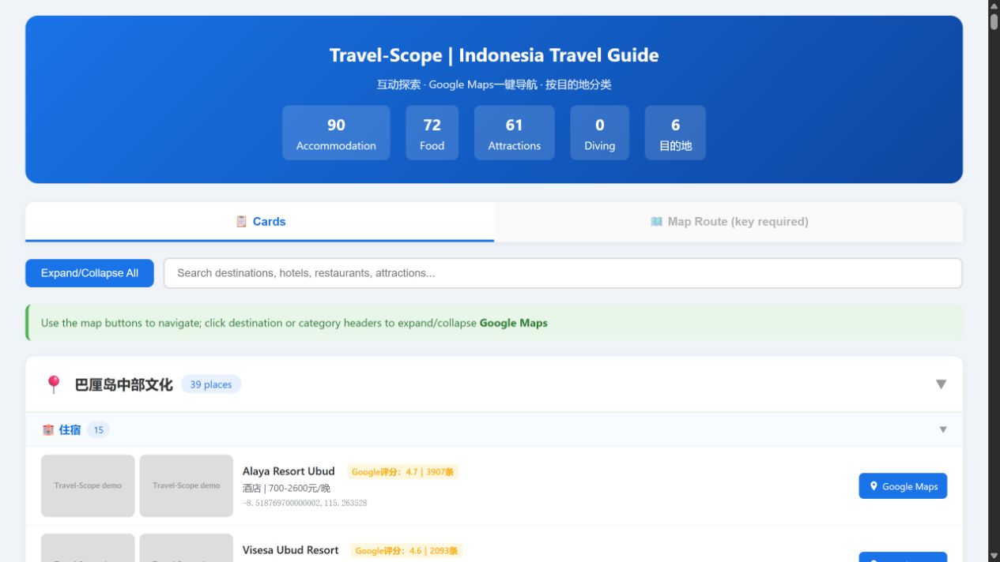
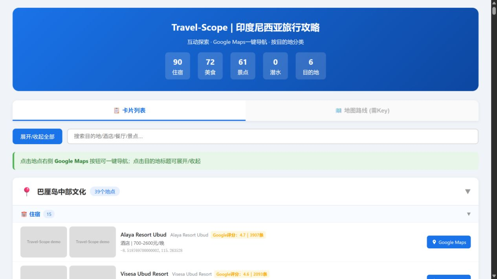
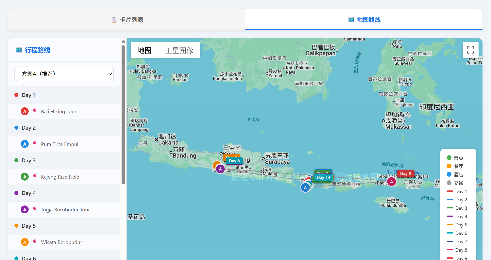

Travel-Scope turns destinations, places, transport and route choices into bilingual, editable and navigable travel deliverables.
See the real output ↓The examples below are regenerated from historical snapshots with the v2.9.1 generator. Dynamic facts must be checked before travel.
Accommodation, food, attractions and transport are grouped by destination. Platform ratings remain separate from the AI recommendation score, and Chinese names are retained where they help with taxis and asking for directions.


Chinese and English outputs are generated from the same validated records. The language layer changes labels and stable fields without silently changing the route or data meaning.
Every route option must have a complete daily itinerary. A normal day can show attractions, a restaurant, accommodation and the transport edge needed to move between destinations.

The tool is designed to be useful without hiding uncertainty.
Map POI data, public web evidence and search snippets are kept as separate evidence types. Missing fields are not invented.
AI recommendation is an independent planning signal only. It must not be read as a Google, Amap, Baidu or review-platform score.
Country requests trigger destination discovery and corridor exploration before detailed hotel, food and attraction search.
Domestic planning prioritizes Amap with Baidu support; international planning prioritizes the selected international map provider.
HTML is for interaction, Markdown is for reading and editing, and Excel is for filtering, printing and route adjustments.
Demo uses fixtures and no provider key. Live mode uses the user's own configuration and requires the normal SOP and QA gates.
Give the agent the standard Q0–Q9 travel brief, confirm it once, and let the complete workflow run.
Example: “Indonesia, 14 days, February, Bali round trip, mixed mid/high-end, super-deep search, Google Maps, AI route recommendation.”
For China, the domestic branch also distinguishes self-drive from non-self-drive transport planning. If Q4 is missing, the formal workflow defaults to non-self-drive and records that decision.